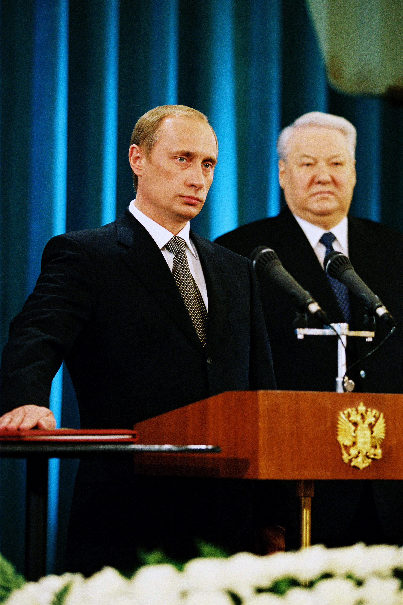

5989507ac299bcc11d26cc48dce10d71c221b680.jpg)
|
Historia:Para mas informacion vea Historia de Rusia. La historia de Rusia es vasta y compleja, abarcando varios milenios de desarrollo político, cultural y territorial. A continuación se presenta un resumen extenso que abarca las principales etapas de la historia rusa. Prehistoria y Antigüedad:Para mas informacion vea Pueblos escitas, Reino del Bósforo y Eslavos orientales. Las primeras evidencias de ocupación humana en la región que hoy conocemos como Rusia se remontan a la era paleolítica. Durante el neolítico, varias culturas como la de los kurganes y la cultura de la cerámica cordada florecieron. Hacia el primer milenio a.C., tribus eslavas comenzaron a asentarse en las vastas llanuras de Europa del Este. |
La Rus de Kiev (882-1240):
Para mas informacion vea Rus de Kiev.
La primera entidad política significativa en la región fue la Rus de Kiev, fundada por vikingos (varangianos) que se habían asentado y mezclado con las tribus eslavas locales. Bajo el reinado del príncipe Vladímir el Grande (980-1015), la Rus de Kiev adoptó el cristianismo ortodoxo en 988, lo que marcó un hito en la cultura y religión rusa. La Rus de Kiev alcanzó su apogeo bajo Yaroslav el Sabio (1019-1054), pero luego se fragmentó en varios principados rivales.
El Periodo de la Horda de Oro (1240-1480):
Para mas informacion vea Horda de Oro.
En el siglo XIII, la invasión de los mongoles, liderados por Batu Khan, devastó la Rus de Kiev. Los mongoles establecieron la Horda de Oro, bajo cuyo dominio los principados rusos fueron vasallos durante más de dos siglos. Moscú, inicialmente un pequeño principado, comenzó a ganar prominencia bajo el gobierno de Iván I Kalitá (1325-1340), quien acumuló poder y riquezas al colaborar con los mongoles.
El Principado de Moscú y el Estado Ruso (1480-1721):
Para mas informacion vea Principado de Moscú y Zarato ruso.
Bajo Iván III el Grande (1462-1505), Moscú se emancipó del dominio mongol en 1480 y se consolidó como el centro del poder ruso, unificando los principados circundantes. Su nieto, Iván IV el Terrible (1533-1584), se coronó como el primer zar de Rusia en 1547 y expandió significativamente el territorio ruso, pero su reinado también fue marcado por la represión y la crueldad.
El "Tiempo de Problemas" (1598-1613) fue un periodo de caos y crisis sucesoria tras la muerte de Iván IV. En 1613, Miguel I fue elegido zar, iniciando la dinastía Romanov que gobernaría Rusia hasta 1917. Pedro el Grande (1682-1725) modernizó y occidentalizó Rusia, transformándola en un imperio y estableciendo San Petersburgo como la nueva capital en 1703.
El Imperio Ruso (1721-1917):
Para mas informacion vea Imperio Ruso.
Catalina la Grande (1762-1796) continuó las reformas de Pedro y expandió el imperio hacia el oeste y el sur. Durante el siglo XIX, Rusia se consolidó como una gran potencia europea, aunque sufrió derrotas significativas como en la Guerra de Crimea (1853-1856). Las reformas emancipadoras de Alejandro II en 1861 liberaron a los siervos, pero las tensiones sociales y políticas continuaron creciendo.
La Revolución Rusa y la Unión Soviética (1917-1991):
Para mas informacion vea Revolución rusa, Guerra civil rusa, Unión Soviética y República Socialista Federativa Soviética de Rusia.
La Revolución de Febrero de 1917 derrocó al último zar, Nicolás II, y estableció un gobierno provisional que fue rápidamente reemplazado por los bolcheviques en la Revolución de Octubre, liderada por Vladímir Lenin. Esto marcó el inicio de la Unión Soviética en 1922. Bajo Josef Stalin (1924-1953), la URSS se industrializó rápidamente, pero a un costo humano terrible debido a la represión política y las hambrunas provocadas por las políticas de colectivización.
Durante la Segunda Guerra Mundial, la URSS desempeñó un papel crucial en la derrota de la Alemania nazi, pero la guerra dejó al país devastado. La Guerra Fría (1947-1991) vio a la URSS y los Estados Unidos enfrentarse en una rivalidad global. Las reformas de Mijaíl Gorbachov (1985-1991) bajo las políticas de glasnost (apertura) y perestroika (reestructuración) no pudieron evitar el colapso de la URSS, que se disolvió en 1991.
La Federación de Rusia (1991-presente):Para mas informacion vea Historia de la Federación Rusa. Tras la disolución de la URSS, Borís Yeltsin se convirtió en el primer presidente de la Federación de Rusia. La década de 1990 estuvo marcada por la crisis económica y política. Vladímir Putin, quien asumió la presidencia en 2000, ha dominado la política rusa desde entonces, alternando entre los roles de presidente y primer ministro. Bajo su liderazgo, Rusia ha consolidado su poder central, enfrentado críticas por autoritarismo y realizado intervenciones militares en Georgia (2008) y Ucrania (2014, 2022). La historia de Rusia es un reflejo de su resiliencia y adaptabilidad, influenciada por su geografía vasta y diversa y sus múltiples interacciones con el mundo exterior. |
 |